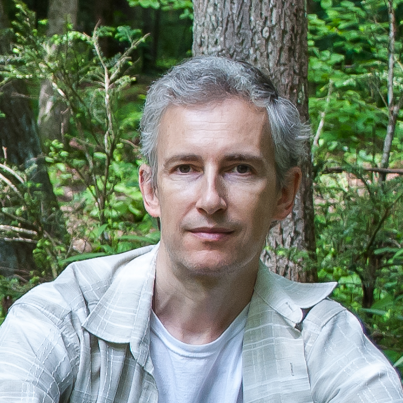
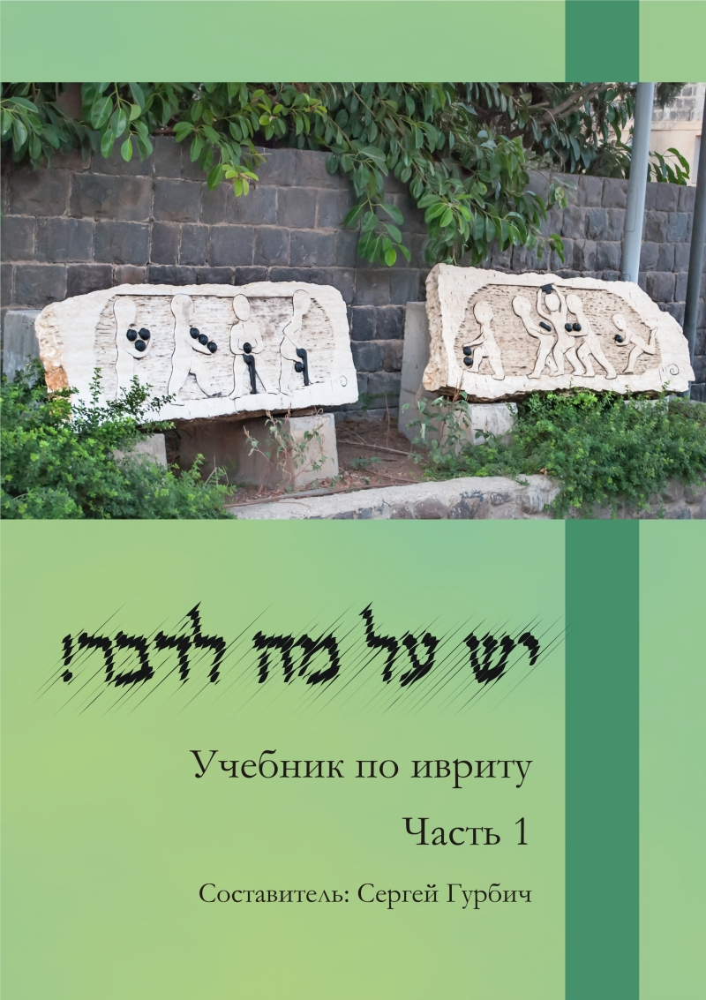

Гебраист, переводчик, литературовед
PhD в области израильской литературы
Стаж преподавания: с 2001 года

Возможности сотрудничества
Для организаций:
координация учебного процесса на академическом уровне;
составление учебных программ по предметам в сфере иудаики;
составление тестов по ивриту и организация тестирования студентов;
создание и поддержка программного обеспечения для увеличения эффективности учебного процесса
и привлечения студентов.
Для частных лиц:
подготовка к сдаче израильских тестов Алеф, Бет и Гимель;
развитие разговорных навыков в разных областях современного иврита;
расширение словарного запаса в рамках медицинской, юридической и технической тематики;
обучение студентов с нуля до свободного владения языком.

Учебный процесс
Хотя каждый курс имеет отработанную годами структуру,
материалы для обучения подбираются каждый раз индивидуально
в соответствии с интересами каждого студента.
Подумайте, что вас интересует: чтение текстов или просмотр видео?
А если видео, то фильмы или анимация?
Может, ваша цель – ведение блога или участие в игровых форумах?
Видео-конференции или общение с партнером вживую?
Для каждой из этих опций у меня есть огромный набор материалов разной тематики
– мода, спорт, технологии, даже общение с дикими животными.
Например, вот видео об американских белках на легком иврите,
сделанное специально для одного из моих курсов.
Преимущества
Вы можете оплачивать стоимость занятия после его окончания – то есть, когда вы уже уверены в качестве услуг.
Если у вас нет опыта обучения онлайн – я помогу обустроить процесс максимально комфортно для вас.
Я развиваю прежде всего навыки общения, потому что понимаю, что ваша задача – не выучить весь язык, а использовать его для достижения своих целей.
У меня есть опыт подготовки студентов к сдаче израильских экзаменов на уровни Алеф и Бет - результат достигается гораздо быстрее, чем в израильском ульпане.
Я знаю, что некоторым студентам удобнее учить язык через грамматику, а других, наоборот, грамматика только пугает. В нашем с вами общении я буду использовать тот подход, который вам удобнее.
Возможен гибкий график занятий, то есть вы можете учить язык даже когда вы путешествуете!
Опыт работы
2020— наст. вр
Исследователь в Университете Иллинойса в Урбане-Шампейн
2002—2015
Преподаватель иврита и израильской литературы в Национальном Университете "Киево-Могилянская Академия"
2000—2022
Переводчик с английского и иврита с опытом работы с литературными, публицистическими и научными текстами.
Образование
октябрь 2017 - июнь 2021
Докторантура, департамент Иудаики, университет Хайдельберга, Германия
март 2016 - август 2017
Магистратура, департамент Иудаики, университет Хайдельберга, Германия